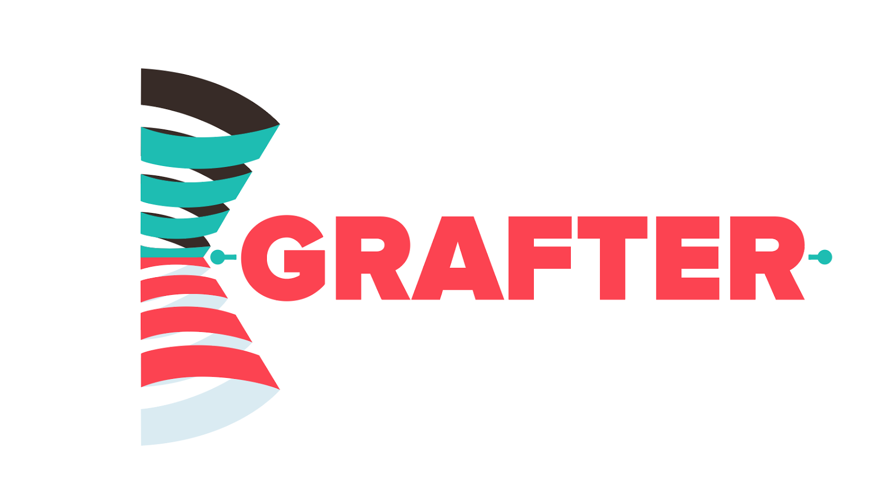

Grafter is a dependency-injection library aiming at giving simple ways to compose independently defined components into a full application which can easily evolve for maintenance or testing.
This user guide is divided in 4 parts: